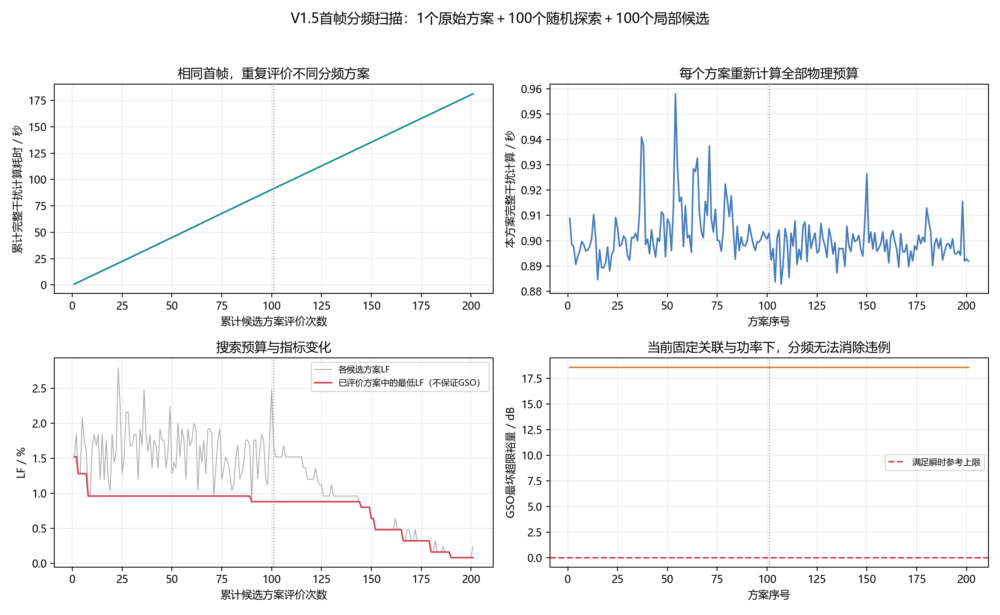
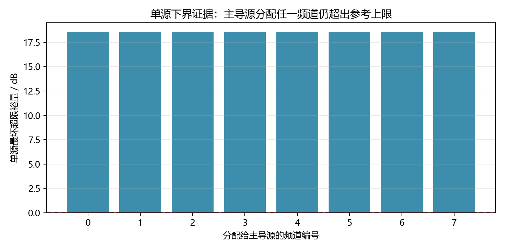
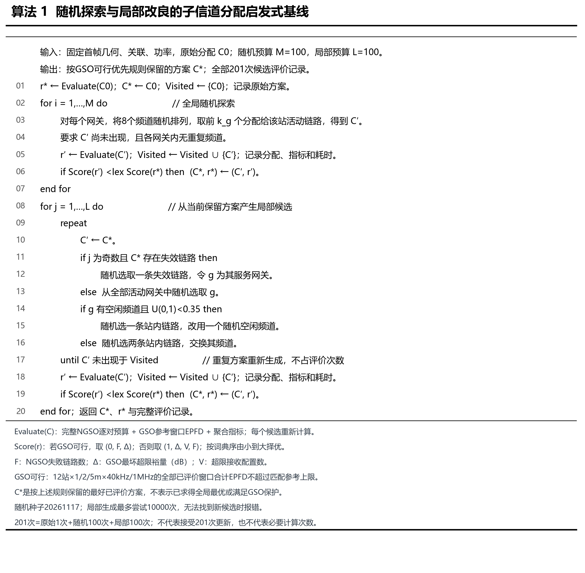
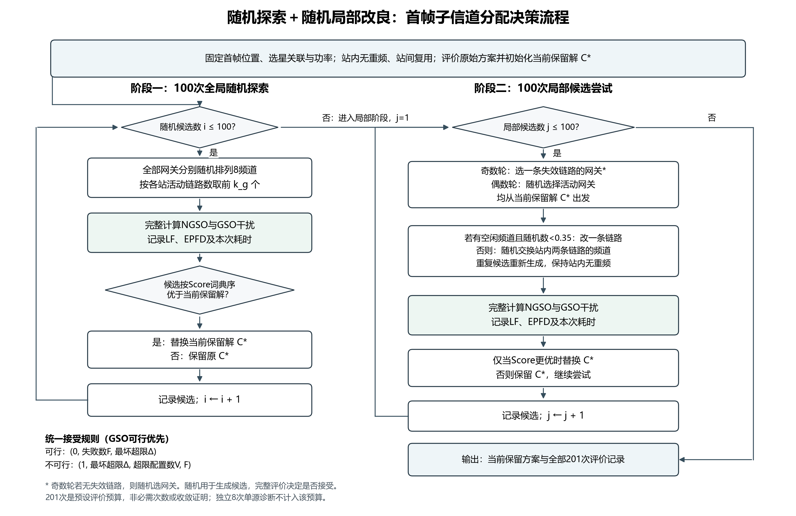

V1.5首帧 · UTC 2026-11-13 12:00:00 · 1250条固定活动链路 · 230个活动网关 · 站内无重频
201次是设定搜索预算，不是所有算法的必要次数。原始分配的一轮完整站内交换/空闲频道调整邻域有5510个候选，按实测单次均值外推约82.8分钟（估计，未实际枚举）。

在固定关联和功率下，一条主导链路无论分配到8个频道中的哪一个，其单独贡献仍超出至少一项GSO瞬时参考上限约18.57dB；其他源的非负贡献无法抵消它。此结论属于当前假设模型，不是现实违规判定。

本次展示未缓存几何的完整重算成本，不证明该成本不可避免，也不证明AI必需。后续应与固定几何精确缓存及增量评价进行公平比较。
周报讲稿与口径说明 · 逐候选数据CSV · 汇总JSON随机探索100次＋局部候选100次；候选生成与接受规则分别描述。

